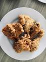

Breaded Chicken

Description
This is an easy recipe that my wife and I used often when we first got
married. It was something that was easy to make as we were learning how to
cook and ended up being very good.
Ingredients
- 2 Chicken Breasts
- Breadcrumbs
- Italian Seasoning
- Parmesan Cheese
- Parsley
- Oregano
Steps
- Preheat oven to 350
-
Mix all of the breadcrumbs, seasonings and parmesan cheese in a plastic
bag and pour onto a plate
-
Coat both sides of the chicken in the breadcrumb mixture and place in a
baking dish
- Pour the leftover breadcrumb mixture on top of the chicken
- Bake for 25-30 minutes